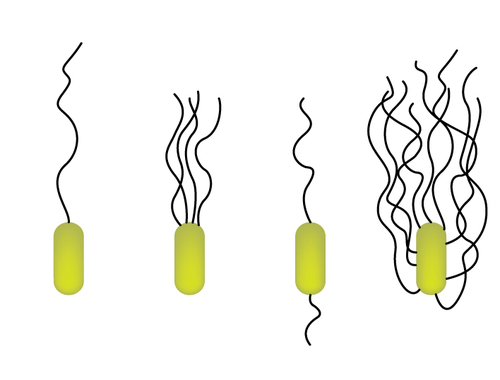
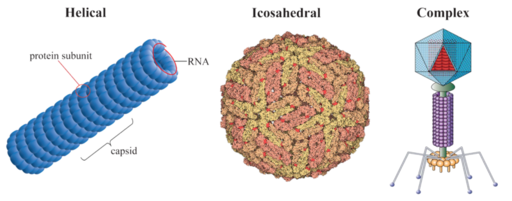

Can you guess what organisms are pictured here? Are they fat green worms on a red leaf? Here’s a clue: There are more organisms like these than any other on Earth. Here’s another clue: Each organisms consists of a single cell without a nucleus.
The organisms are bacteria called Salmonella. If the word Salmonella rings a bell, that’s probably because Salmonella causes human diseases such as food poisoning. Many other types of bacteria also cause human diseases. But not all bacteria are harmful to people. In fact, we could not survive without many of the trillions of bacteria that live in or on the human body. You will learn why when you read this chapter.
No doubt you’ve had a sore throat before, and you’ve probably eaten cheese or yogurt. If so, then you’ve encountered the fascinating world of prokaryotes. Prokaryotes are single-celled organisms that lack a nucleus. They also lack other membrane-bound organelles. Prokaryotes are tiny and sometimes bothersome, but they are the most numerous organisms on Earth. Without them, the world would be a very different place.
An overview of bacteria can be seen at http://www.youtube.com/user/khanacademy#p/c/7A9646BC5110CF64/16/TDoGrbpJJ14 .
Click on the image above for more content
Prokaryotes are currently placed in two domains. A domain is the highest taxon, just above the kingdom. The prokaryote domains are Bacteria and Archaea (see Figure below ). The third domain is Eukarya. It includes all eukaryotes. Unlike prokaryotes, eukaryotes have a nucleus in their cells.
The Three Domains of Life. All living things are grouped in three domains. The domains Bacteria and Archaea consist of prokaryotes. The Eukarya domain consists of eukaryotes.
It’s not clear how the three domains are related. Archaea were once thought to be offshoots of Bacteria that were adapted to extreme environments. For their part, Bacteria were considered to be ancestors of Eukarya. Scientists now know that Archaea share several traits with Eukarya that Bacteria do not share (see Table below ). How can this be explained? One hypothesis is that Eukarya arose when an Archaean cell fused with a Bacterial cell. The two cells became the nucleus and cytoplasm of a new Eukaryan cell. How well does this hypothesis fit the evidence in Table below ?
| Characteristic | Bacteria | Archaea | Eukarya |
|---|---|---|---|
| Flagella | Unique to Bacteria | Unique to Archaea | Unique to Eukarya |
| Cell Membrane | Unique to Bacteria | Like Bacteria and Eukarya | Unique to Eukarya |
| Protein Synthesis | Unique to Bacteria | Like Eukarya | Like Archaea |
| Introns | Absent in most | Present | Present |
| Peptidoglycan (in cell wall) | Present | Absent in most | Absent |
Bacteria are the most diverse and abundant group of organisms on Earth. They live in almost all environments. They are found in the ocean, the soil, and the intestines of animals. They are even found in rocks deep below Earth’s surface. Any surface that has not been sterilized is likely to be covered with bacteria. The total number of bacteria in the world is amazing. It’s estimated to be 5 × 10 30 , or five million trillion trillion. You have more bacteria in and on your body than you have body cells!
Bacteria called cyanobacteria are very important. They are bluish green in color (see Figure below ) because they contain chlorophyll. They make food through photosynthesis and release oxygen into the air. These bacteria were probably responsible for adding oxygen to the air on early Earth. This changed the planet’s atmosphere. It also changed the direction of evolution. Ancient cyanobacteria also may have evolved into the chloroplasts of plant cells.
Cyanobacteria Bloom. The green streaks in this lake consist of trillions of cyanobacteria. Excessive nutrients in the water led to overgrowth of the bacteria.
Thousands of species of bacteria have been discovered, and many more are thought to exist. The known species can be classified on the basis of various traits. One classification is based on differences in their cell walls and outer membranes. It groups bacteria into Gram-positive and Gram-negative bacteria, as described in Figure below .

Classification of Bacteria. Different types of bacteria stain a different color when stained with Gram stain. This makes them easy to identify.
Scientists still know relatively little about Archaea. This is partly because they are hard to grow in the lab. Many live inside the bodies of animals, including humans. However, none are known for certain to cause disease.
Archaea were first discovered in extreme environments. For example, some were found in hot springs. Others were found around deep sea vents. Such Archaea are called extremophiles , or “lovers of extremes.” Figure below describes three different types of Archaean extremophiles. The places where some of them live are thought to be similar to the environment on ancient Earth. This suggests that they may have evolved very early in Earth’s history.
Extremophile Archaea. Many Archaea are specialized to live in extreme environments. Just three types are described here.
Archaea are now known to live just about everywhere on Earth. They are particularly numerous in the ocean. Archaea in plankton may be one of the most abundant types of organisms on the planet. Archaea are also thought to play important roles in the carbon and nitrogen cycles. For these reasons, Archaea are now recognized as a major aspect of life on Earth.
Most prokaryotic cells are much smaller than eukaryotic cells. Although they are tiny, prokaryotic cells can be distinguished by their shapes. The most common shapes are helices, spheres, and rods (see Figure below ).
Prokaryotic Cell Shapes. The three most common prokaryotic cell shapes are shown here.
Like other cells, prokaryotic cells have a plasma membrane (see Figure below ). It controls what enters and leaves the cell. It is also the site of many metabolic reactions. For example, cellular respiration and photosynthesis take place in the plasma membrane.
Most prokaryotes also have a cell wall. It lies just outside the plasma membrane. It gives strength and rigidity to the cell. Bacteria and Archaea differ in the makeup of their cell wall. The cell wall of Bacteria contains peptidoglycan (composed of sugars and amino acids). The cell wall of most Archaea lacks peptidoglycan.

Prokaryotic Cell. The main parts of a prokaryotic cell are shown in this diagram. The structure called a mesosome was once thought to be an organelle. More evidence has convinced most scientists that it is not a true cell structure at all. Instead, it seems to be an artifact of cell preparation. This is a good example of how scientific knowledge is revised as more evidence becomes available. Can you identify each of the labeled structures?
Inside the plasma membrane of prokaryotic cells is the cytoplasm. It contains several structures, including ribosomes, a cytoskeleton, and genetic material. Ribosomes are sites where proteins are made. The cytoskeleton helps the cell keeps its shape. The genetic material is usually a single loop of DNA. There may also be small, circular pieces of DNA, called plasmids (see Figure below ). The cytoplasm may contain microcompartments as well. These are tiny structures enclosed by proteins. They contain enzymes and are involved in metabolic processes.
Prokaryotic DNA. The DNA of a prokaryotic cell is in the cytoplasm because the cell lacks a nucleus.
Many prokaryotes have an extra layer, called a capsule, outside the cell wall. The capsule protects the cell from chemicals and drying out. It also allows the cell to stick to surfaces and to other cells. Because of this, many prokaryotes can form biofilms, like the one shown in Figure below . A biofilm is a colony of prokaryotes that is stuck to a surface such as a rock or a host’s tissues. The sticky plaque that collects on your teeth between brushings is a biofilm. It consists of millions of bacteria.
Most prokaryotes also have long, thin protein structures called flagella (singular, flagellum). They extend from the plasma membrane. Flagella help prokaryotes move. They spin around a fixed base, causing the cell to roll and tumble. As shown in Figure below , prokaryotes may have one or more flagella.
Bacterial Biofilm. The greatly magnified biofilm shown here was found on a medical catheter (tubing) removed from a patient’s body.

Variations in the Flagella of Bacteria. Flagella in prokaryotes may be located at one or both ends of the cell or all around it. They help prokaryotes move toward food or away from toxins.
Many organisms form spores for reproduction. Some prokaryotes form spores for survival. Called endospores , they form inside prokaryotic cells when they are under stress. The stress could be UV radiation, high temperatures, or harsh chemicals. Endospores enclose the DNA and help it survive under conditions that may kill the cell. Endospores are commonly found in soil and water. They may survive for long periods of time.
Like all living things, prokaryotes need energy and carbon. They meet these needs in a variety of ways. In fact, prokaryotes have just about every possible type of metabolism. They may get energy from light (photo) or chemical compounds (chemo). They may get carbon from carbon dioxide (autotroph) or other living things (heterotroph). Table below shows all the possible types of metabolism. Which types of prokaryotes are producers? Which types are consumers?
| Type of Energy | Source of Carbon: carbon dioxide | Source of Carbon: other organisms |
|---|---|---|
| Light | Photoautotroph | Photoheterotroph |
| Chemical Compounds | Chemoautotroph | Chemoheterotroph |
Most prokaryotes are chemoheterotrophs. They depend on other organisms for both energy and carbon. Many break down organic wastes and the remains of dead organisms. They play vital roles as decomposers and help recycle carbon and nitrogen. Photoautotrophs are important producers. They are especially important in aquatic ecosystems.
Prokaryote habitats can be classified on the basis of oxygen or temperature. These factors are important to most organisms.
Like most organisms, prokaryotes live and grow best within certain temperature ranges. Prokaryotes can be classified by their temperature preferences, as shown in Table below . Which type of prokaryote would you expect to find inside the human body?
| Type of Prokaryote | Preferred Temperature | Where It Might Be Found |
|---|---|---|
| Thermophile | above 45°C (113°F) | in compost |
| Mesophile | about 37°C (98°F) | inside animals |
| Psychrophile | below 20°C (68°F) | in the deep ocean |
Prokaryote cells grow to a certain size. Then they divide through binary fission. For a discussion of exponential growth and bacteria see http://www.youtube.com/watch?v=-3MI0ZX5WRc (10:43).
Binary fission is a type of asexual reproduction. It occurs when a parent cell splits into two identical daughter cells. This can result in very rapid population growth. For example, under ideal conditions, bacterial populations can double every 20 minutes. Such rapid population growth is an adaptation to an unstable environment. Can you explain why?
In asexual reproduction, all the offspring are exactly the same. This is the biggest drawback of this type of reproduction. Why? Lack of genetic variation increases the risk of extinction. Without variety, there may be no organisms that can survive a major change in the environment.
Prokaryotes have a different way to increase genetic variation. It’s called genetic transfer . It can occur in two ways. One way is when cells “grab” stray pieces of DNA from their environment. The other way is when cells directly exchange DNA (usually plasmids) with other cells. Genetic transfer makes bacteria very useful in biotechnology. It can be used to create bacterial cells that carry new genes.
Bacteria and humans have many important relationships. Bacteria make our lives easier in a number of ways. In fact, we could not survive without them. On the other hand, bacteria can also make us sick.
Bacteria provide vital ecosystem services. They are important decomposers. They are also needed for the carbon and nitrogen cycles. There are billions of bacteria inside the human intestines. They help digest food, make vitamins, and play other important roles. Humans also use bacteria in many other ways, including:
Fermented Foods. Fermentation is a type of respiration that doesn’t use oxygen. Fermentation by bacteria is used in brewing and baking. It is also used to make the foods pictured here.
You have ten times as many bacteria as human cells in your body. Most of these bacteria are harmless. However, bacteria can also cause disease. Examples of bacterial diseases include tetanus, syphilis, and food poisoning. Bacteria may spread directly from one person to another. For example, they can spread through touching, coughing, or sneezing. They may also spread via food, water, or objects.
Another way bacteria and other pathogens can spread is by vectors. A vector is an organism that spreads pathogens from host to host. Insects are the most common vectors of human diseases. Figure below shows two examples.
Bacterial Disease Vectors. Ticks spread bacteria that cause Lyme disease. Deerflies spread bacteria that cause tularemia.
Humans have literally walked into some new bacterial diseases. When people come into contact with wild populations, they may become part of natural cycles of disease transmission. Consider Lyme disease. It’s caused by bacteria that normally infect small, wild mammals, such as mice. A tick bites a mouse and picks up the bacteria. The tick may then bite a human who invades the natural habitat. Through the bite, the bacteria are transmitted to the human host.
Bacteria in food or water usually can be killed by heating it to a high temperature (generally, at least 71°C, or 160°F). Bacteria on many surfaces can be killed with chlorine bleach or other disinfectants. Bacterial infections in people can be treated with antibiotic drugs . For example, if you ever had “strep” throat, you were probably treated with an antibiotic.
Antibiotics have saved many lives. However, misuse and over-use of the drugs have led to antibiotic resistance in bacteria. Figure below shows how antibiotic resistance evolves. Some strains of bacteria are now resistant to most common antibiotics. These infections are very difficult to treat.
Evolution of Antibiotic Resistance in Bacteria. This diagram shows how antibiotic resistance evolves by natural selection.
1. What are prokaryotes?
2. Distinguish between Gram-positive and Gram-negative bacteria, and give an example of each.
3. Summarize the evolutionary significance of cyanobacteria.
4. What are extremophiles? Name three types.
5. Identify the three most common shapes of prokaryotic cells.
6. Describe a typical prokaryotic cell.
7. What are the roles of flagella and endospores in prokaryotes?
8. List several benefits of bacteria.
9. Assume that a certain prokaryote is shaped like a ball, lives deep under the water on the ocean floor, and consumes dead organisms. What traits could you use to classify it?
10. Apply lesson concepts to explain why many prokaryotes are adapted for living at the normal internal temperature of the human body.
11. Compare and contrast Archaea and Bacteria.
12. Why might genetic transfer be important for the survival of prokaryote species?
13. Why might genetic transfer make genetic comparisons of prokaryotes difficult to interpret in studies of their evolution?
In this lesson, you read that some bacteria cause human diseases. Many other human diseases are caused by viruses.
At the end of the last lesson, you were asked which of the three domains of life do viruses belong to. Did you figure it out? None. Why? Viruses are usually considered to be nonliving. Viruses do not meet most of the criteria of life. They are not even cells.
An overview of viruses can be seen at http://www.youtube.com/user/khanacademy#p/c/7A9646BC5110CF64/17/0h5Jd7sgQWY .
Click on the image above for more content
An individual virus is called a virion. It is a tiny particle much smaller than a prokaryotic cell. Because viruses do not consist of cells, they also lack cell membranes, cytoplasm, ribosomes, and other cell organelles. Without these structures, they are unable to make proteins or even reproduce on their own. Instead, they must depend on a host cell to synthesize their proteins and to make copies of themselves. Viruses infect and live inside the cells of living organisms. When viruses infect the cells of their host, they may cause disease. For example, viruses cause AIDS, influenza (flu), chicken pox, and the common cold.
Although viruses are not classified as living things, they share two important traits with living things. They have genetic material, and they can evolve. This is why the classification of viruses has been controversial. It calls into question just what it means to be alive. What do you think? How would you classify viruses?
Viruses vary in their structure. The structure of a virus is one trait that determines how it is classified.
A virus particle consists of DNA or RNA within a protective protein coat called a capsid. The shape of the capsid may vary from one type of virus to another, as shown in Figure below .

Capsid Shapes in Viruses. Three shapes of viral capsids are shown here. They are helical (spiral), icosahedral (20-sided), and complex. Viruses with complex shapes may have extra structures such as protein tails.
Some viruses have an envelope of phospholipids and proteins. The envelope is made from portions of the host’s cell membrane. It surrounds the capsid and helps protect the virus from the host’s immune system. The envelope may also have receptor molecules that can bind with host cells. They make it easier for the virus to infect the cells.
Viruses are classified on the basis of several traits. For example, they may be classified by capsid shape, presence or absence of an envelope, and type of nucleic acid. Most systems of classifying viruses identify at least 20 virus families. Table below shows four examples of virus families and their traits. Have any of these viruses made you sick?
| Virus Family | Capsid Shape | Envelope Present? | Type of Nucleic Acid | Disease Caused by a Virus in this Family |
|---|---|---|---|---|
| Adenovirus | icosahedral | no | DNA | acute respiratory disease |
| Herpesviruses | icosahedral | yes | DNA | chicken pox |
| Orthomyxoviruses | helical | yes | RNA | influenza |
| Coronaviruses | complex | yes | RNA | common cold |
Viruses are so small that they can be seen only with an electron microscope. Before electron microscopes were invented, scientists knew viruses must exist. How did they know? They had demonstrated that particles smaller than bacteria cause disease.
Researchers used special filters to remove bacteria from tissues that were infected. If bacteria were causing the infection, the filtered tissues should no longer be able to make other organisms sick. However, the filtered tissues remained infective. This meant that something even smaller than bacteria was causing the infection.
Scientists did not actually see viruses for the first time until the 1930s. That’s when the electron microscope was invented. The virus shown in Figure below was the first one to be seen.
Tobacco Mosaic Virus. This tobacco mosaic virus was the first virus to be discovered. It was first seen with an electron microscope in 1935.
Where did viruses come from? How did the first viruses arise? The answers to these questions are not known for certain. Several hypotheses have been proposed. The two main hypotheses are stated below. Both may be valid and explain the origin of different viruses.
Populations of viruses do not grow through cell division because they are not cells. Instead, they use the machinery and metabolism of a host cell to produce new copies of themselves. After infecting a host cell, a virion uses the cell’s ribosomes, enzymes, ATP, and other components to replicate. Viruses vary in how they do this. For example:
In either case, the newly made viral proteins assemble to form new virions. The virions may then direct the production of an enzyme that breaks down the host cell wall. This allows the virions to burst out of the cell. The host cell is destroyed in the process. The newly released virus particles are free to infect other cells of the host.
Viruses cause many human diseases. In addition to the diseases mentioned above, viruses cause rabies, measles, diarrheal diseases, hepatitis, polio, and cold sores (see Figure below ). Viral diseases range from mild to fatal. One way viruses cause disease is by causing host cells to burst open and die. Viruses may also cause disease without killing host cells. They may cause illness by disrupting homeostasis in host cells.
Cold Sore. Cold sores are caused by a herpes virus.
Some viruses live in a dormant state inside the body. This is called latency . For example, the virus that causes chicken pox may infect a young child and cause the short-term disease chicken pox. Then the virus may remain latent in nerve cells within the body for decades. The virus may re-emerge later in life as the disease called shingles. In shingles, the virus causes painful skin rashes with blisters (see Figure below ).
Shingles. Shingles is a disease caused by the same virus that causes chicken pox.
Some viruses can cause cancer. For example, human papillomavirus (HPV) causes cancer of the cervix in females. Hepatitis B virus causes cancer of the liver. A viral cancer is likely to develop only after a person has been infected with a virus for many years.
Viral diseases can be difficult to treat. They live inside the cells of their host, so it is hard to destroy them without killing host cells. Antibiotics also have no effect on viruses. Antiviral drugs are available, but only for a limited number of viruses.
Many viral diseases can be prevented by giving people vaccines (see Figure below ). A vaccine is a substance that contains pathogens such as viruses. The pathogens have been changed in some way so they no longer cause disease. However, they can still provoke a response from the host’s immune system. This results in immunity, or the ability to resist the pathogen. Vaccines have been produced for the viruses that cause measles, chicken pox, mumps, polio, and several other diseases.
Vaccination. A child receives a vaccine to prevent a viral disease. How does the vaccine prevent the disease?
Viruses are important tools in scientific research and medicine. Viral research has increased our understanding of fundamental biological processes involving DNA, RNA, and proteins. Viruses that infect cancer cells are being studied for their use in cancer treatment. Viruses are also being used in gene therapy to treat genetic disorders, as explained in Figure below .

Using a Virus in Gene Therapy. A normal human gene is inserted into a virus. The virus carries the gene into a human host cell. The gene enters the nucleus and becomes part of the DNA. The normal gene can then be used to make normal proteins. It can also be copied and passed to daughter cells in the host.
1. How do viruses differ from living things? How are they similar to living things?
2. Describe variation in capsid shape in viruses.
3. State two hypotheses for the origin of viruses.
4. Describe how viruses replicate.
5. How do viruses cause human disease?
6. Apply lesson concepts to decide how strep throat and flu can be treated or prevented. Create a chart to summarize your ideas.
7. Viruses often infect bacteria. Some of them destroy the bacterial cells they infect. How could this information be applied to finding a cure for bacterial infections?
8. Why did scientists think viruses must exist even before they ever saw them with an electron microscope?
9. Why are viruses especially useful tools for understanding molecular biology? What might scientists learn by studying how viruses invade and use host cells?
In this chapter, you read about two of the three domains of life: Bacteria and Archaea. The next chapter introduces the simplest, smallest members of the third domain, the Eukarya.
Opening image copyright MichaelTaylor, 2010. http://www.shutterstock.com . Used under license from Shutterstock.com.
{kind=link}
{kind=link}
{kind=link}
:%20http://en.wikipedia.org/wiki/File:Leptospira_interrogans_strain_RGA_01.png;%20(Sphere):%20http://en.wikipedia.org/wiki/File:Staphylococcus_aureus_01.jpg;%20(Rod)%20http://commons.wikimedia.org/wiki/File:Salmonella_typhimurium.png){kind=link}
{kind=link}
:%20http://www.flickr.com/photos/86688834@N00/2143709720;%20http://www.flickr.com/photos/johnnystiletto/5308169660/in/photostream/;%20http://commons.wikimedia.org/wiki/File:Swiss_cheese_cubes.jpg;%20http://en.wikipedia.org/wiki/File:Labneh01.jpg){kind=link}
{kind=link}
{kind=link}
{kind=link}
{kind=link}
{kind=link}